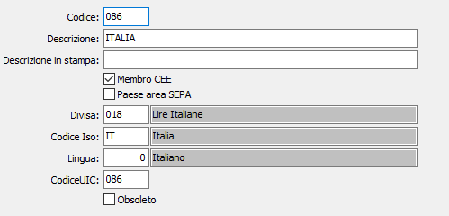

Nazioni
La tabella consente di memorizzare le nazioni con cui l’utente intrattiene rapporti di lavoro e le ulteriori informazioni necessarie per il controllo dei codici Iso e della triangolazione sui cambi. I codici delle nazioni vengono memorizzati nelle anagrafiche clienti o fornitori.

CODICE: codice alfanumerico di 3 caratteri che individua la nazione in esame. Su questo campo sono attive le funzioni di ricerca (F9) sulla tabella stessa.
DESCRIZIONE: campo alfanumerico di 50 caratteri per inserire la descrizione della nazione
DESCRIZIONE IN STAMPA: campo alfanumerico relativo alla descrizione della nazione sulle varie stampe.
PAESE AREA SEPA: definisce se la nazione appartiene all'area SEPA (casella con segno di spunta).
MEMBRO CEE: se attivo, il flag definisce che la nazione in esame appartiene alla Comunità Economica Europea, e pertanto utilizza un codice Iso.
DIVISA: codice alfanumerico di 3 caratteri, presente nella tabella Divise, che definisce la divisa ufficiale della nazione, o la divisa con la quale si tratta abitualmente, con i clienti/fornitori appartenenti a quella nazione. Su questo campo sono attive le funzioni di ricerca (F9) sulla tabella Divise.
CODICE ISO: codice alfanumerico di 2 caratteri, presente nella tabella Codici ISO, che definisce il codice ISO della nazione in esame se questa appartiene alla CEE. L'inserimento di questo campo è obbligatorio nel caso di nazioni con flag di appartenenti alla CEE Su questo campo sono attive le funzioni di ricerca (F9) sulla tabella Codici ISO.
LINGUA: codice numerico di 1 carattere, presente nella tabella Lingue, che definisce la lingua utilizzata nella nazione in esame. Su questo campo sono attive le funzioni di ricerca (F9) sulla tabella Lingue.
CODICE UIC: Indicare la codifica internazionale UIC.
OBSOLETO: flag attivabile dall’utente per inibire il possibile utilizzo dell’elemento di tabella in esame nelle successive transazioni.